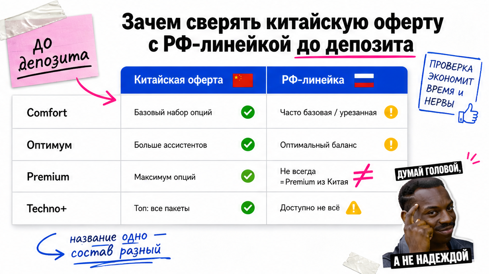
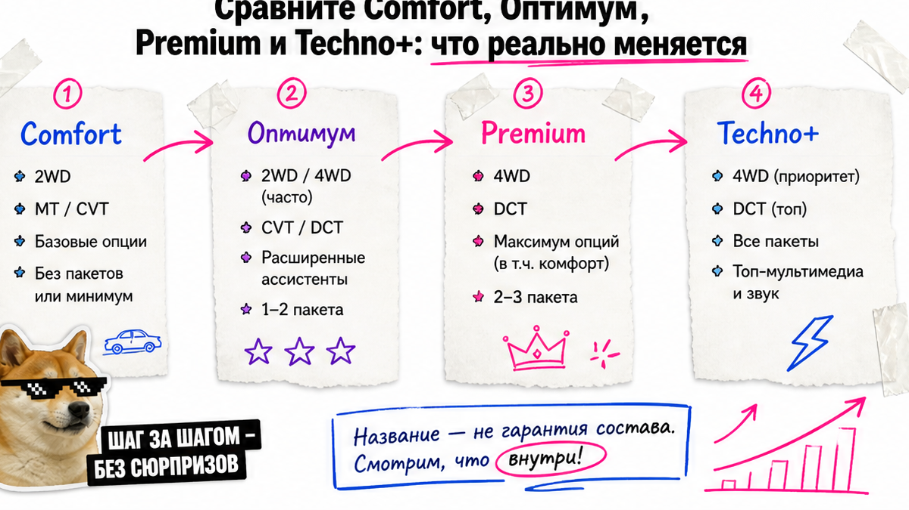
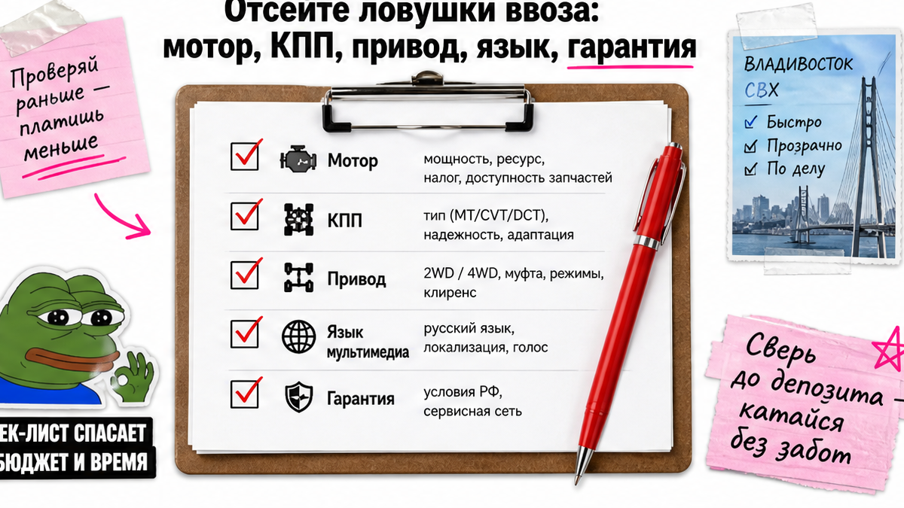

В Telegram мелькнуло "Хавал Джолион из Китая дешевле дилера, полная комплектация" – и рука уже тянется к предоплате. Типичная боль: купить "красивый Премиум", а после оплаты узнать, что привод передний, коробка не та, меню на китайском, а гарантия – сказка. Проблема не в Китае, а в оплате до сверки. Ниже – чек-лист: сверка с Comfort / Оптимум / Premium / Techno+ 2026, фиксация железа в договоре и стоп без VIN. После гайда получите лист из 10 пунктов – и только по нему можно платить.
Коротко: "Jolion из Китая" часто оказывается соседней спецификацией или моделью Chitu – внешне похоже, крепления и софт другие. Сверяйте оферту с РФ-матрицей 2026: Comfort только механика и передний привод, Techno+ – полный привод и робот. Депозит – только после фото VIN = договор = инвойс и списка опций, а не слова "премиум". Гарантию "как у дилера" на серый ввоз не обещают – это отдельный разговор в договоре.
На практике человек видит панораму на фото, слышит "Премиум" в чате, а в инвойсе нет ни 4WD, ни DCT. VIN "пришлют после оплаты". Через неделю – 2WD, китайское меню, дилер разводит руками. Мы в Авто-Сейлс во Владивостоке сначала собираем совпадение железа и бумаг, а уже потом говорим про деньги. Сюрприз рынка: в Китае "тот же Jolion" нередко оказывается Chitu / Jolion Pro или иной спецификацией – похожий силуэт не значит тульскую сборку РФ.

Дилерская матрица 2026 нужна не чтобы "купить у дилера", а как эталон: что в России называют Comfort, Оптимум, Premium и Techno+. Если в чате только красивое слово без списка опций – вы сравниваете картинку с воздухом.
На пальцах: 2WD – передний привод (крутит две колёса спереди), 4WD – полный. MT – механика, 7DCT – "робот" с двумя сцеплениями (коробка без привычной ручки автомата). СВХ – склад временного хранения у порта, куда машина попадает до оформления. СБКТС и ЭПТС – документы безопасности и электронный паспорт, без которых на учёт не поставить.
Делать: выписать из чата обещанную комплектацию и рядом – эталон РФ. Не делать: платить за "полную комплектацию", пока нет списка опций и привода на бумаге.

По открытым материалам HAVAL RU и дилерским разборам на 2026 имена такие: Комфорт → Оптимум (раньше часто Elite) → Премиум → Техно+. Железо и опции меняются не "чуть лучше салон", а заметно.
| Комплектация РФ 2026 | Привод / КПП (типично) | На что смотреть в китайской оферте |
|---|---|---|
| Comfort | Только 2WD + механика (ориентир ~143 л.с.) | Не путать с "базой с роботом"; зафиксировать MT и 2WD |
| Оптимум | 2WD или 4WD; робот на многих версиях | Частый выбор для города; письменно – привод и КПП |
| Premium | 2WD или 4WD + больше комфорта | Панорама и "красивый салон" ≠ полный пакет ассистентов |
| Techno+ | Только 4WD + робот (DCT); топ ADAS | 360°, автопарковка, расширенные ассистенты – отдельными строками |
Например, у 2WD часто проще задняя подвеска, у 4WD – многорычажка и заявленный момент около 270 Нм на обновлённом моторе. Ориентиры дилерских МЦП (с НДС, по пресс-релизам) – от порядка ~2,05 млн за Comfort до ~2,9 млн за Techno+; это не "ваша цена под ключ из Китая", а якорь сравнения. Актуальный расчёт под ваш VIN – только в каталоге, без готовых сумм пошлин в статье.
Делать: для города без полного привода чаще смотреть Оптимум 2WD и не доплачивать за топ "потому что красиво". Не делать: считать слово "Премиум" равным Techno+.
Вердикт по комплектации: если нужен город и спокойный бюджет – Оптимум 2WD с зафиксированным роботом. Если нужен полный привод и ассистенты топа – Techno+, и только с 4WD+DCT в договоре. Иначе вы платите за ярлык.

Типичная ошибка – верить фото салона. Нужны отдельные строки: мощность/момент, MT или 7DCT, 2WD или 4WD, ключевые опции (панорама, 360°, ADAS).
Честно: у параллельного экземпляра нет заводской дилерской гарантии РФ "из коробки". Юрлицам с осени 2023 ужесточили параллельный ввоз брендов, официально представленных в РФ (включая Haval); физлица могут ввозить единично. Устное "гарантия есть" без договора – красный флаг.
Делать: фиксировать железо и сервисные риски до денег. Не делать: принимать "как у официалов" на слово.
Стоп-правило порта: нет фото VIN на кузове/табличке и сверки с договором и инвойсом – нет депозита. VIN – это 17-символьный идентификатор машины; он должен совпасть в переписке, инвойсе и на железе.
Если продавец тянет с VIN "после оплаты" – в реальном проекте это почти всегда стоп. Красивые фото не заменяют маркировку.
Нужен разбор оферты до депозита – напишите в Telegram avtosales125. Форм на странице нет: детали заказа живут в переписке и каталоге.
Делать: депозит только после пакета VIN + документы + комплектация. Не делать: переводить "за бронь" на красивую картинку.
Критерий успеха: перед депозитом заполнен лист ниже – понятный результат проверки. Пока есть "нет" – деньги не уходят. Так вы сможете отличить готовую сделку от картинки.
Схема после оплаты (ориентир, не калькулятор):
Приход во Владивосток → СВХ → оформление → СБКТС / ЭПТС → выдача или автовоз по РФ
Таможня в начале 2026 сообщала о средних 2–3 днях выпуска декларации – это ориентир хаба, не обещание по вашей партии. Сроки и роль собственника согласуйте до перевода, а не "потом разберёмся".
Актуальные варианты и расчёт под ключ – в каталоге avto-sales125.ru. Без форм на блоге: сначала сверка, потом деньги.
Делать: идти по 10 пунктам сверху вниз. Не делать: путать "купил в чате" с "получил ключи".
Нужен подбор под ключ – откройте каталог Авто-Сейлс до перевода. Офис во Владивостоке (Днепровская 40а, стр. 4) – хаб логистики без форм на этой странице.
Материал проверен: редакция Авто-Сейлс (эксперты по авто под заказ из Японии, Кореи и Китая).
Достоверность: факты сверены с пресс-релизами HAVAL RU по линейке JOLION 2026, дилерскими разборами комплектаций, открытыми материалами по Chitu/Jolion, практикой DRIVE2 по креплениям CN vs РФ и чек-листами документов до оплаты; актуальные расчёты и подбор – в каталоге.
РФ-версия ориентирована на тульскую линейку Comfort / Оптимум / Premium / Techno+ с понятной гарантией дилера. Китайская оферта может быть другой спецификацией или соседней моделью (Chitu). До депозита сверяйте привод, КПП, опции и VIN, а не только фото.
Часто достаточно Оптимум 2WD с зафиксированным роботом, если полный привод и топ-ADAS не нужны. Не доплачивайте за ярлык "Премиум/Techno+", пока список опций не совпал с договором.
Письменно: 2WD или 4WD, MT или 7DCT, мощность. Помните: Comfort в РФ – механика и передний привод; Techno+ – полный привод и робот. Нет строк в инвойсе – нет депозита.
Нет. Заводской дилерской гарантии РФ у параллельного экземпляра обычно нет. Требуйте письменные условия продавца или выбирайте понятный канал под ключ.
Да. Китайское меню и карты не становятся русскими "сами". Заложите русификацию/CarPlay как отдельный пункт бюджета и срока, не как мелочь после прихода.
Стоп. Запросите фото маркировок и сверку с договором до перевода. Если давят срочностью без VIN – лучше другая оферта или разбор с командой Авто-Сейлс.
Ориентир: приход → СВХ → оформление → СБКТС и ЭПТС → выдача или автовоз. Согласуйте, кто делает документы и кто собственник, до оплаты – не после.